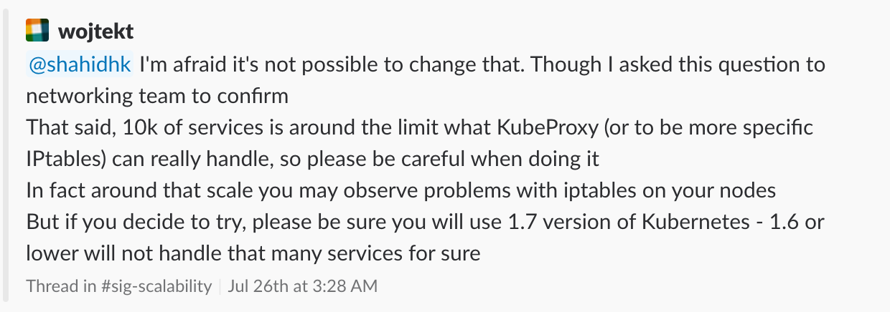

Finding Info from the  Community
Community
An Example With a Service Scaling Edge Case
Chris Hiestand, Consultant at Kistek LLC
What does the documentation say about this?
What do the developers say?
- Open Issue: How many and how big services should kubernetes scale to?https://github.com/kubernetes/kubernetes/issues/48938
- Scalability Thresholds: https://github.com/kubernetes/community/blob/master/sig-scalability/thresholds.md
Let's be precise, 10k service ports. Each service port has an entrance iptables rule. From what I have observed, the number of service ports have a larger impact than the number of backends.
source: https://github.com/kubernetes/kubernetes/issues/48938
Scalability Thresholds
| Quantity | Head threshold | 1.8 release | Long term goal |
|---|---|---|---|
| Total number of all objects | 250000 | 1000000 | |
| Number of nodes | 5000 | 5000 | |
| Number of pods | 150000 | 500000 | |
| Number of pods per node1 | 110 | 500 | |
| Number of pods per core1 | 10 | 10 | |
| Number of namespaces (ns) | 10000 | 100000 | |
| Number of pods per ns | 15000 | 50000 | |
| Number of services | 10000 | 100000 | |
| Number of all services backends | TBD | 500000 | |
| Number of backends per service | 5000 | 5000 | |
| Number of deployments per ns | 20000 | 10000 | |
| Number of pods per deployment | TBD | 10000 | |
| Number of jobs per ns | TBD | 1000 | |
| Number of daemon sets per ns | TBD | 100 | |
| Number of stateful sets per ns | TBD | 100 | |
| Number of secrets per ns | TBD | TBD | |
| Number of secrets per pod | TBD | TBD | |
| Number of config maps per ns | TBD | TBD | |
| Number of config maps per pod | TBD | TBD | |
| Number of storageclasses | TBD | TBD | |
| Number of roles and rolebindings | TBD | TBD |
There are also thresholds for other types, but for those the numbers depend also on the environment (bare metal or which cloud provider) the cluster is running in. These include:
| Quantity | Head threshold | 1.8 release | Long term goal |
|---|---|---|---|
| Number of ingresses | TBD | TBD | |
| Number of PersistentVolumes | TBD | TBD | |
| Number of PersistentVolumeClaims per ns | TBD | TBD | |
| Number of PersistentVolumeClaims per node | TBD | TBD |
Search in Kubernetes Slack: 
basically, the total number of backends of each services should be relatively small to it should be "number of services x number of ports of a service x number of pods being part of a service" that shouldn't be large
Tentative Conclusion
number of services (s)
number of ports of a service (sp)
number of pods being part of a service (p)
s*sp*p << 10k
Actual Conclusion
TBT (To Be Tested)
kube-proxy options
Tuning might help
--iptables-min-sync-period
--iptables-sync-period

IPVS (Linux IP Virtual Server): in-kernel load balancer
Introduced in 1999
α in kubernetes 1.8. Reportedly solves the iptables scale issues
Tentative Conclusion:
Problem Solved
Actual Conclusion
TBT (To Be Tested)
Additional Resources
- kubernetes blog
- kubernetes twitter
- kubernetes community repository
- kubernetes-users mailing list
- stackoverflow
- source code
- hire a local consultant (nudge nudge wink wink)